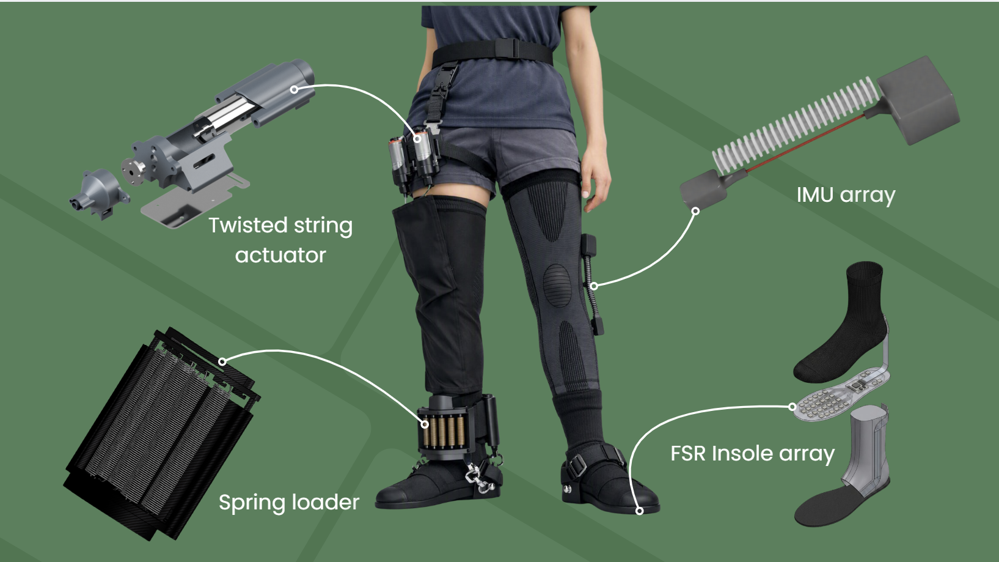

RUNMO is a wearable rehabilitation platform combining IMUs, force-sensitive insoles, wireless embedded systems, and a real-time clinician dashboard to provide objective feedback on lower-limb movement and rehabilitation progress.
Designed and integrated RUNMO's wearable sensing system, working across BNO085 IMUs, FSR pressure sensors, ESP32 microcontrollers, power electronics, and wireless communication. Developed the knee sensing pipeline from sensor acquisition and quaternion-based orientation to calibrated knee-angle estimation, signal processing, and rehabilitation metrics.
Built and integrated the real-time dashboard, connecting wearable telemetry to live knee/hip metrics, foot-load visualization, gait modelling, session tracking, and clinician reporting. Debugged and validated the complete hardware-software pipeline, including I²C communication, power, wireless connectivity, sensor calibration, and sensor accuracy against a clinical goniometer.